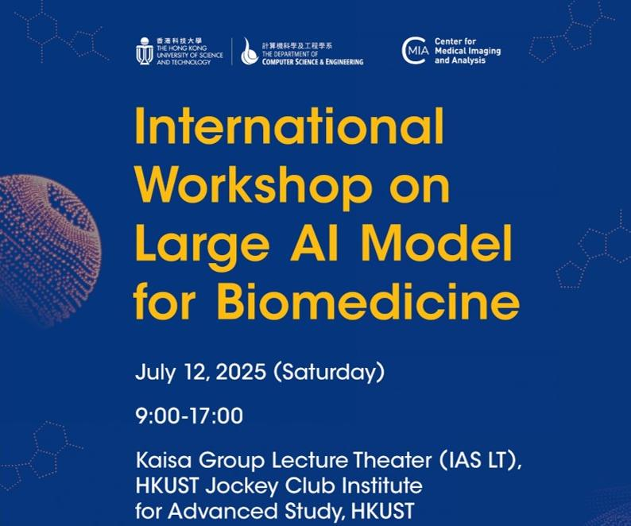
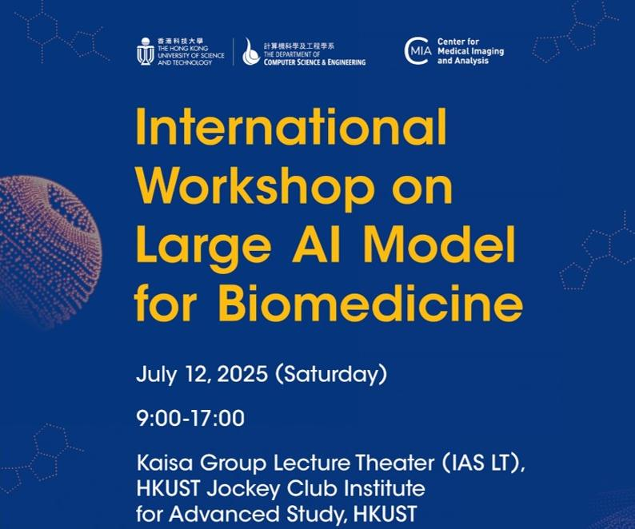

Prof. Hao Chen
HKUST
Prof. Hao Chen is an Assistant Professor at Department of Computer Science and Engineering, Department of Chemical and Biological Engineering and Division of Life Science, Hong Kong University of Science and Technology (HKUST). He leads the SMART Lab focusing on Trustworthy Artificial Intelligence (AI) for Healthcare. He has 200+ publications (Google Scholar Citations 27K+, h-index 66) in top-tier conferences and journals including MICCAI, IEEE-TMI, Medical Image Analysis, CVPR, ICCV, AAAI, Radiology, Nature Communications, Lancet Digital Health, Nature Machine Intelligence, JAMA, etc. He has received several premium awards such as 2023 Asian Young Scientist Fellowship, 2019 MICCAI Young Scientist Impact Award, 2023 Prestigious Achievement Award of OMIA-X, and several Best Paper Awards. He was reported as one of the six researchers who are shaping the future of artificial intelligence by Nature Index 2020. He also led the team winning 15+ medical grand challenges.
Prof. Pranav Rajpurkar
Harvard University (Remote)
Prof. Pranav Rajpurkar, PhD, is an Assistant Professor at Harvard University and a researcher in the field of medical artificial intelligence. With a focus on medical image interpretation, Dr. Rajpurkar's research lab strives to develop AI models that can match the proficiency of top-tier medical doctors. His research group is at the forefront of developing "Generalist Medical AI" systems that can closely resemble doctors in their ability to reason through a wide range of medical tasks, incorporate multiple data modalities, and communicate in natural language. He has written over 100 academic articles with more than 24K citations in notable journals like Nature, NEJM, and Nature Medicine. His work has been recognized by MIT Tech Review's Innovator Under 35 in 2023, Nature Medicine Early-career Researcher To Watch in 2022, and the Google Research Scholar Program in 2023, Forbes 30 Under 30 in 2022.
Prof. Ruijiang Li
Stanford University
Prof. Ruijiang Li is an Associate Professor (Research) of Radiation Oncology (Radiation Physics) at Stanford University. He leads a lab focused on the development and application of novel machine learning and deep learning approaches for medical imaging analysis and precision oncology. His research aims to discover imaging-based biomarkers for cancer detection, diagnosis, treatment response prediction, and prognosis, with the goal of transforming cancer care. His work spans radiology, histopathology, and genomic data integration to advance personalized cancer therapy. Prof. Li has authored numerous high-impact publications in top-tier journals and conferences, including Nature, Nature Communications, Lancet Digital Health, Nature Machine Intelligence, JAMA Network Open, Radiology, and Journal of Clinical Oncology.
Prof. Dong Liang
SIAT, Chinese Academy of Sciences
Prof. Dong Liang is a Full Professor and Vice Director of the Paul C. Lauterbur Research Center for Biomedical Imaging at the Shenzhen Institutes of Advanced Technology (SIAT), Chinese Academy of Sciences. He also leads research at the Research Center for Medical AI, focusing on compressed sensing (CS), magnetic resonance imaging (MRI), and machine learning for biomedical applications. With 100+ publications in top-tier journals and conferences, his work advances fast MRI reconstruction, AI-driven medical imaging, and computational diagnostics. He is a recipient of multiple awards, including the first prize of the National Science and Technology Progress Award (2021). Prof. Liang holds prestigious editorial roles, including Associate Editor of IEEE Transactions on Medical Imaging and Editorial Board Member of Magnetic Resonance in Medicine.
Prof. Wang Xin
CUHK
Prof. Xin Wang is an Associate Professor at the Department of Surgery, Chinese University of Hong Kong (CUHK), and a Guest Associate Professor at the West China School of Basic Medical Sciences & Forensic Medicine, Sichuan University. He leads research in Biomedical Informatics, with a focus on Cancer Bioinformatics, integrating bioinformatics, systems biology, machine learning, and AI for mechanistic and translational studies in human diseases, particularly cancer. He has published 70+ papers in prestigious journals (Nature Medicine, Gastroenterology, Hepatology, Annals of Surgery, Science Advances, Nature Communications, etc.). His work is funded by the Hong Kong Research Grants Council, Shenzhen/Guangdong grants, and the National Natural Science Foundation of China.
Prof. Ouyang Xiaomin
HKUST
Prof. Xiaomin Ouyang is an Assistant Professor at the Department of Computer Science and Engineering at the Hong Kong University of Science and Technology (HKUST), specializing in AI-powered mobile and IoT systems with a focus on machine learning for IoT, mobile computing, smart health, and cyber-physical systems. Her work emphasizes developing efficient machine learning and sensing systems for real-world applications, including deploying IoT systems to monitor digital biomarkers for Alzheimer's Disease in clinical trials. Recognized for her contributions, she received the ACM MobiSys 2023 Best Paper Award, the ACM SIGBED China Outstanding Doctoral Dissertation Award, and was named a 2023 EECS Rising Star and a 2024 NIH mHealth Training Institute Scholar.
Dr. Cheong Kin Ronald Chan
CUHK/Hospital Authority
Dr. Cheong Kin Ronald Chan is a Consultant at the Hospital Authority, NTEC (Pathology), and Lab Director of North District Hospital, as well as an Honorary Clinical Associate Professor at the Department of Anatomical and Cellular Pathology, The Chinese University of Hong Kong. He leads the Pathology Artificial Intelligence Development and Assessment Laboratory. Dr. Chan has published numerous papers in reputable journals and conferences, contributing significantly to the fields of digital pathology and artificial intelligence. His work includes over 30 publications, with notable journals such as Diagnostic Cytopathology, The Oncologist, and Advanced Science.
Dr. Zheng Li
CUHK
Dr. Zheng LI is currently an Associate Professor in department of Surgery and an associated member of Chow Yuk Ho Technology Centre for Innovative Medicine, department of biomedical engineering and T Stone Robotics Institute of the Chinese University of Hong Kong. He is also an adjunct associate professor of Monash University, Australia. Previously, he worked as a research assistant professor in the institute of digestive disease and as a research fellow in National University of Singapore. He is a senior member of IEEE, member of ASME, and member of RAS. Zheng served as the editor of BioRob 2020 and associate editor of RA-L, associate editor of ICRA, IROS, etc.
Dr. Cheng Yang
AstraZeneca
Dr. Cheng Yang is a researcher at AstraZeneca, focusing on the application of artificial intelligence and machine learning in pharmaceutical research and drug discovery. His work contributes to advancing AI-driven approaches in biomedical research and pharmaceutical development.
Dr. Dennis Lee
Hospital Authority
Dr. Dennis Lee is a medical professional at the Hospital Authority, contributing to the integration of AI technologies in clinical practice and healthcare delivery.